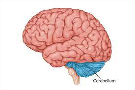
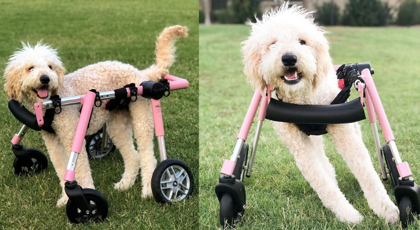
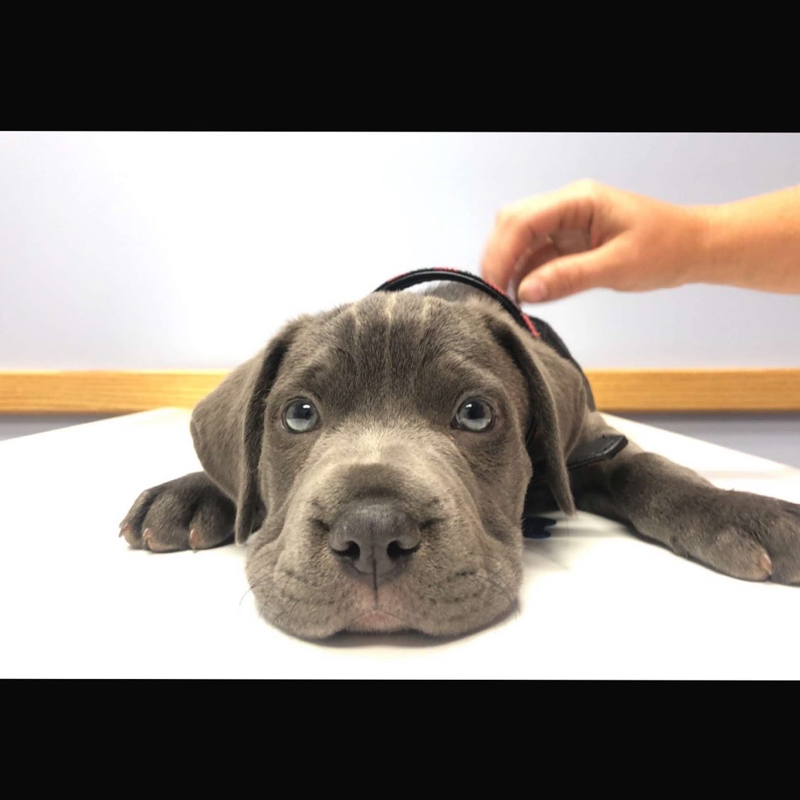
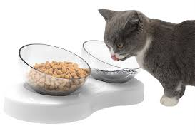

What is cerebellar Hypoplasia?
Cerebellar hypoplasia is a developmental condition in which the cerebellum of the brain fails to develop properly
Caring for animals with CH
While there is no cure or treatment for this condition, as your puppy grows-up they can learn to compensate for their condition and go on to live a long, happy, and pain free life. Pets with cerebellar hypoplasia can often benefit from the use of a dog wheelchair to help support them and keep them mobile.
 Learn More....Meet my dog with CH!
Below you can see my dog Diesel, he was born with CH and it is hard to watch him struggle to do simple tasks but then i think about all the fun we have together and how happy he is and it makes it all worth it.
 Learn More....CH Blog
Getting in contect with other people who care for pets with CH is useful because you can learn things that you havent experienced yet that may help in your future with your special pet!
 Learn More....